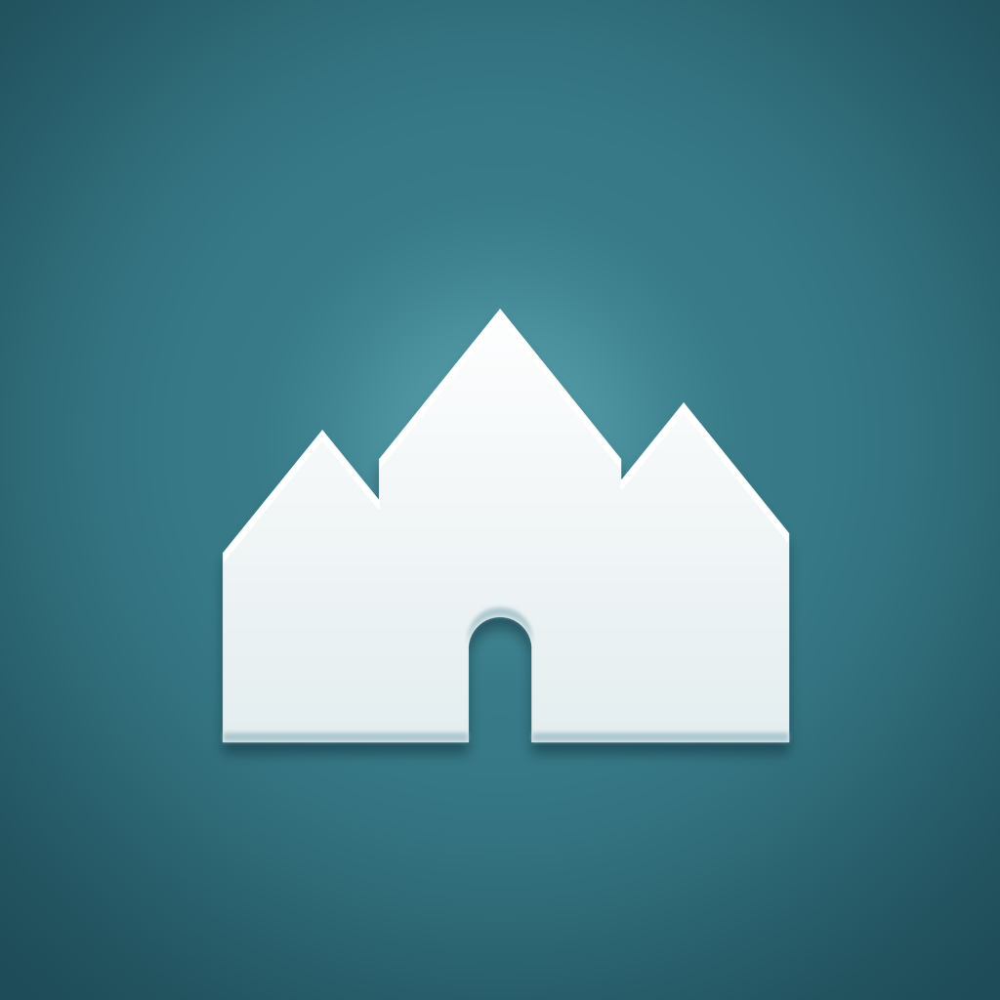

<!doctype html>
<html>
<head>
<meta charset="utf-8">
<meta name="viewport" content="width=1920">
<title>App film</title>
<link href="https://fonts.googleapis.com/css2?family=Inter+Tight:wght@500;700;800&family=Jost:wght@300;400&display=block" rel="stylesheet">
<!--
  Ultramock-style app film (1920x1080): one white phone on light grey, a
  slow orbiting camera, and the app's real screen recording playing on the
  glass. ?app=fac or ?app=marracat picks the screen edit and end card.
  Everything is driven by render(t), so render.py can seek frame by frame;
  ?play previews it live. Same file lives in dhcr-map and Marracat.
-->
<style>
  * { box-sizing: border-box; margin: 0; padding: 0; }
  html, body { width: 1920px; height: 1080px; overflow: hidden; }
  body { background: radial-gradient(80% 90% at 50% 38%, #fbfbfc 0%, #eceef0 55%, #d9dbdf 100%); }
  .world { position: absolute; left: 50%; top: 50%; width: 0; height: 0; perspective: 1800px; }
  .rig { position: absolute; transform-style: preserve-3d; }
  .phone { position: absolute; width: 560px; height: 1217px; left: -280px; top: -608px; transform-style: preserve-3d; }
  .layer { position: absolute; inset: 0; border-radius: 96px; background: linear-gradient(140deg, #ffffff, #c9ccd2 35%, #eceef1 60%, #a9aeb6); }
  .face { position: absolute; inset: 0; border-radius: 96px; padding: 14px; transform: translateZ(30px);
    background: linear-gradient(140deg, #ffffff, #d5d8dd 30%, #bfc3c9 70%, #f6f7f8); box-shadow: inset 0 0 0 2px rgba(255,255,255,.8); }
  .screen { width: 100%; height: 100%; border-radius: 84px; overflow: hidden; background: #000; position: relative; border: 7px solid #000; }
  .screen video { width: 100%; height: 100%; object-fit: cover; display: block; }
  .island { position: absolute; top: 26px; left: 50%; width: 156px; height: 46px; margin-left: -78px; background: #000; border-radius: 26px; z-index: 3; }
  .sheen { position: absolute; inset: 0; z-index: 2; pointer-events: none;
    background: linear-gradient(115deg, rgba(255,255,255,0) 30%, rgba(255,255,255,.16) 46%, rgba(255,255,255,0) 58%); background-size: 300% 100%; }
  .shadow { position: absolute; left: -330px; top: 560px; width: 660px; height: 120px; border-radius: 50%;
    background: radial-gradient(closest-side, rgba(0,0,0,.22), transparent); filter: blur(18px); transform: translateZ(-60px); }
  .dof { position: absolute; inset: 0; pointer-events: none; backdrop-filter: blur(var(--b, 0px));
    -webkit-mask-image: radial-gradient(70% 70% at 50% 50%, transparent 45%, #000 100%); }
  .end { position: absolute; inset: 0; display: flex; flex-direction: column; align-items: center; justify-content: center; gap: 26px; opacity: 0; }
  .end img { width: 210px; height: 210px; border-radius: 48px; box-shadow: 0 30px 60px rgba(0,0,0,.18); }
  .end .name { font-family: "Inter Tight", sans-serif; font-weight: 800; font-size: 110px; letter-spacing: -4px; color: #0b1418; }
  .end .wordmark { font-family: "Jost", sans-serif; font-weight: 400; font-size: 132px; letter-spacing: 30px; padding-left: 30px; color: #0a0a0a; }
  .end .sub { font-family: "Inter Tight", sans-serif; font-weight: 500; font-size: 40px; color: #5c6670; }
  .end .avail { font-family: "Inter Tight", sans-serif; font-weight: 500; font-size: 26px; letter-spacing: 5px; text-transform: uppercase; color: #8a929a; }
</style>
</head>
<body>
<div class="world"><div class="rig" id="rig">
  <div class="shadow" id="shadow"></div>
  <div class="phone">
    <div class="layer"></div><div class="layer" style="transform:translateZ(10px)"></div><div class="layer" style="transform:translateZ(20px)"></div>
    <div class="face"><div class="screen"><div class="island"></div><div class="sheen" id="sheen"></div>
      <video id="v" muted playsinline preload="auto"></video>
    </div></div>
  </div>
</div></div>
<div class="dof" id="dof"></div>
<div class="end" id="end"></div>

<script>
const APPS = {
  fac: {
    video: "fac-edit.webm", len: 31.2,
    end: `<div class="name">Find A Crib</div>
          <div class="sub">Every rent-stabilized building in NYC</div><div class="avail">On the App Store</div>`,
  },
  marracat: {
    video: "marracat-edit.webm", len: 31.9,
    end: `<div class="wordmark">MARRACAT</div>
          <div class="sub">Your next favorite. All in one place.</div><div class="avail">On iPhone and iPad</div>`,
  },
};
const app = APPS[new URLSearchParams(location.search).get("app") || "fac"];
const START = 0.3;                       // film time the screen video starts
const OUT = START + app.len;             // phone leaves, end card in
const DURATION = OUT + 3.2;
window.DURATION = DURATION;

const v = document.getElementById("v"), rig = document.getElementById("rig");
const end = document.getElementById("end"), dof = document.getElementById("dof");
const sheen = document.getElementById("sheen"), shadow = document.getElementById("shadow");
v.src = app.video; end.innerHTML = app.end;

// Camera path over the screen video: [fraction, tx, ty, tz, rx, ry, rz].
// Far away -> rush to a close-up on the splash -> pull back -> steep glide
// -> side views and push-ins -> settle square-on.
const K = [
  [0.00,    0,    0, -9000, 20,  30,   0],
  [0.05,    0,   40,   240,  6, -10,  -6],
  [0.11,    0,    0,   110,  4, -16,  -4],
  [0.18,    0,  -40,  -360,  2,  14,   2],
  [0.26,  -60,  240,   240, 46,   0, -26],
  [0.34,   60, -180,   360, 42,   0, -20],
  [0.42,    0,    0,  -320,  0, -26,   4],
  [0.50,    0,  360,   380, 10,  -8,   0],
  [0.58,    0, -300,   380, 10,   8,   0],
  [0.66,    0,    0,  -260,  6,  22,  -3],
  [0.74,    0,  120,   280,-14, -14,   6],
  [0.84,    0,  -90,   200, 28,  16,  12],
  [0.93,    0,    0,  -160,  4, -10,  -2],
  [1.00,    0,    0,  -420,  0,   0,   0],
];
const cr = (p0, p1, p2, p3, u) => 0.5 * ((2 * p1) + (-p0 + p2) * u + (2 * p0 - 5 * p1 + 4 * p2 - p3) * u * u + (-p0 + 3 * p1 - 3 * p2 + p3) * u * u * u);
function camera(f) {
  f = Math.min(Math.max(f, 0), 1);
  let i = 0; while (i < K.length - 2 && f > K[i + 1][0]) i++;
  const k0 = K[Math.max(i - 1, 0)], k1 = K[i], k2 = K[i + 1], k3 = K[Math.min(i + 2, K.length - 1)];
  let u = (f - k1[0]) / (k2[0] - k1[0]);
  if (i === 0) u = 1 - Math.pow(1 - u, 3);          // the opening rush decelerates
  return [1, 2, 3, 4, 5, 6].map(c => cr(k0[c], k1[c], k2[c], k3[c], u));
}
const clamp01 = x => Math.min(Math.max(x, 0), 1);
const ease = x => x < .5 ? 4 * x * x * x : 1 - Math.pow(-2 * x + 2, 3) / 2;

window.render = async (t) => {
  const f = (t - START) / app.len;
  let [tx, ty, tz, rx, ry, rz] = camera(f);
  // exit: fly back and fade before the end card
  const out = ease(clamp01((t - (OUT - 0.6)) / 1.0));
  tz -= out * 2600; ry += out * 20;
  rig.style.transform = `translate3d(${tx}px,${ty}px,${tz}px) rotateX(${rx}deg) rotateY(${ry}deg) rotateZ(${rz}deg) scale(.74)`;
  rig.style.opacity = 1 - out;
  shadow.style.opacity = clamp01(1 - Math.abs(rx) / 40) * (1 - out);
  sheen.style.backgroundPosition = `${130 - ((t * 9) % 160)}% 0`;
  dof.style.setProperty("--b", `${clamp01((tz - 150) / 300) * 7}px`);
  const e = ease(clamp01((t - OUT - 0.2) / 0.8));
  end.style.opacity = e; end.style.transform = `translateY(${(1 - e) * 30}px)`;
  const vt = Math.min(Math.max(t - START, 0), app.len - 0.04);
  if (Math.abs(v.currentTime - vt) > 0.001) {
    await new Promise(r => { v.addEventListener("seeked", r, { once: true }); v.currentTime = vt; });
  }
};
window.ready = Promise.all([
  document.fonts.ready,
  new Promise(r => v.readyState >= 2 ? r() : v.addEventListener("loadeddata", r, { once: true })),
  ...[...document.images].map(i => i.complete ? 0 : new Promise(r => { i.onload = i.onerror = r; })),
]);
if (location.search.includes("play")) {
  ready.then(() => { const t0 = performance.now(); const tick = async () => { await render(((performance.now() - t0) / 1000) % DURATION); requestAnimationFrame(tick); }; tick(); });
}
</script>
</body>
</html>
